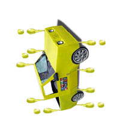

| SUI |
the SWEET ice cream cone dripped on to my hand. |
|
垂 ALSO looks like car (車) but the horizontal lines poke out, and the verticals do NOT poke out.

LO...!
|
| ( を ) た＊らす |
I dangle it.
1/2 KANA
★☆☆☆☆ |
| ( が ) た＊れる |
it drips, dangles. Also used as the action verb for piss, shit, fart. Seriously, even fart. A fun curse to use when frustrated is is ウンコ垂れ！(literally, "Dangling turd!")
1/2 KANA
★★☆☆☆ |
| 垂直 に |
vertical, but also means perpendicular.
☆☆☆☆☆
|
| Meaning | Hint | Radical | |
|---|---|---|---|
| 車 | car | ||
| 重 | heavy / overlap | EXTRA LINES / AXLES | |
| 垂 | drip, dangle | LINES DRIP OFF TO THE LEFT AND RIGHT | |
| 乗 | ride a vehicle | TREE | 木 |
Car is an axle turned sideways.
Heavy cars are so heavy they need an extra axle.
Paint drips or dangles from the side of the newly-painted car.
You ride a vehicle RIGHT INTO A TREE.
 KANJIDAMAGE
KANJIDAMAGE